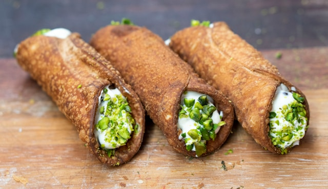

How to prepare Cannoli
Let's start

Ingredients
For the shells (makes ~10-12 medium cannoli):
- 250 g all-purpose flour
- 30g sugar
- 30 g lard or butter
- 1 egg yolk
- 60 ml dry white wine or Marsala
- 1 pinch of salt
- olive oil for fry
For filling
- 500 g ricotta (preferably sheep’s milk, very well drained)
- 150–200 g powdered sugar (to taste)
- 1 tsp vanilla extract or orange zest (optional)
- 50–70 g dark chocolate chips or candied orange peel
Decoration (optional):
- Chopped pistachios
- Candied cherries
- Powdered sugar for dusting
Instructions:
- Prepare the shells dough
- In a bowl, mix flour, sugar, salt
- Add lard (or butter) and mix until crumbly.
-
Add the egg yolk and wine gradually; knead until smooth (about 10
min).
- Wrap in plastic and let it rest in the fridge for 1–2 hours.
- Make the filling
- Drain the ricotta overnight in the fridge, if possible.
- Pass it through a fine sieve for a creamy texture.
-
Mix with powdered sugar, vanilla/orange zest, and chocolate chips.
- Chill until ready to use.
- Roll out and fry the shells
-
Roll dough thinly (about 1–2 mm) and cut into ovals or 10×10 cm
squares.
-
Wrap each around a metal cannoli tube, sealing the edge with egg
white.
- Heat oil to ~170–180°C (340–360°F), fry until golden (1–2 min).
- Drain on paper towels. Cool before removing the tubes.
- Assemble
-
Just before serving, fill shells with ricotta cream using a piping
bag.
- Decorate ends with pistachios, candied fruit, or chocolate.
- Dust with powdered sugar.
Go to Home